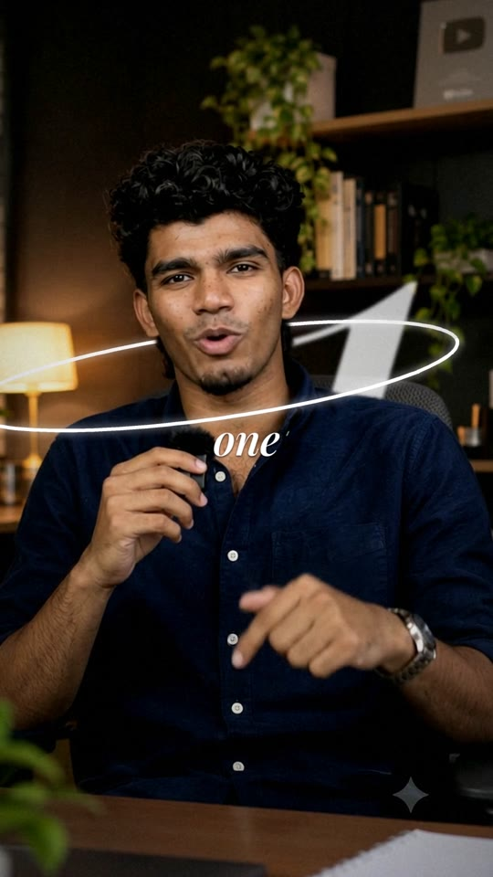
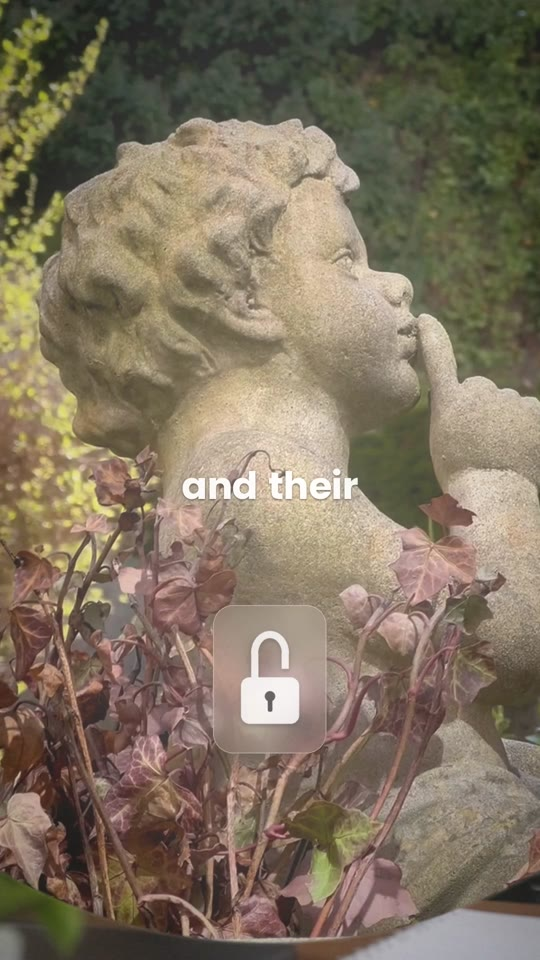

How to turn any talking-head video into a premium editorial reel with Claude: setup, your first edit, every option, and how this skill was built.
BEFOREAFTER
cuttit.createpie.storeNot affiliated with Anthropic. Claude is a trademark of Anthropic.
Contents
Inside this guide
1. What Byline does3
2. What you need2
3. Setup, step by step (once)4
4. Your first edit5
5. Customise: the 10 options6
6. How Byline designs your edit7
7. B-roll, sound effects and music8
8. Record for the best result9
9. Prompt cheat sheet9
10. Troubleshooting10
11. How I built Byline with Claude11
12. FAQ and licence12
What's in your download:byline/SKILL.md (the skill), byline/style.json (the exact style values), byline/scripts/ (the tested renderer), byline/scripts/plan.example.json (the demo's edit plan), and this guide.
2 · What you need
A computer (Mac, Windows or Linux; phones can't render) with Claude Code: the Claude desktop app's Code tab or the VS Code extension, on a paid Claude plan.
Python 3.10+ and ffmpeg. Both are free; Claude installs the Python packages for you.
Your talking-head video: 1080p or better, 15–90 seconds works best.
Time: a quick preview takes about 3 minutes; the final 60 fps render takes about 2 minutes per second of video.
Byline · The complete guide2
1 · What Byline does
A premium edit, designed for your script
Byline is a Claude skill: a folder of instructions plus tested code that you add to Claude Code once. After that, you send Claude a talking-head video and say "Edit this video with Byline." Claude transcribes it, reads your script, designs an edit for it, and renders a finished 1080×1920 reel.
Text behind youB-roll as a 3D card

Orbit line + giant number
Element
What it looks like
Pop-in captions
1–2 words at a time in Poppins Bold, popping 80→100% and hard-cutting; key words switch to a big Playfair Italic serif.
Text behind you
Giant words rise letter by letter behind your head. Claude cuts you out on every frame with an AI matte.
Lines
Glowing strokes that draw themselves: an orbit looping behind your neck, swooshes that lead b-roll in.
Breaker cards
Full-screen black or white word cards whose letters build one by one, synced to a bass whoosh.
Motion graphics
Bar charts, padlocks, hearts, counters, calendars and icon chips on frosted glass, floating and shimmering.
B-roll
Floating 3D cards over a blurred you, iris reveals, or full screen, in slow motion.
Feel
60 fps, smooth intentional camera moves, soft white light-flash transitions, synced sound effects, a quiet music bed.
Byline · The complete guide3
3 · Setup (once, about 10 minutes)
Set up Byline
Install Claude Code. Download the Claude desktop app from claude.ai/download and sign in, then open the Code tab. (Or install the Claude Code extension in VS Code.)
Install ffmpeg and Python.
Mac (Terminal):
brew install ffmpeg python
Windows (PowerShell):
winget install Gyan.FFmpeg
winget install Python.Python.3.12
(close and reopen PowerShell afterwards)
Install the skill. Unzip byline-skill.zip. Move the byline folder into your Claude skills folder:
Mac / Linux: ~/.claude/skills/byline/
Windows: C:\Users\<you>\.claude\skills\byline\
You should now have .../skills/byline/SKILL.md.
Make a project folder for your reels, e.g. Documents/reels, and open it in Claude Code.
Let Claude finish the setup. Paste this:
Set up Byline in this folder: install the Python packages from the Byline skill,
download the two fonts (Poppins Bold, Playfair Display Italic) into fonts/,
and download the MODNet model into models/modnet.onnx as the skill says.
Then confirm everything works.
Check: ask Claude "Is Byline ready?". It should confirm ffmpeg, Python packages, fonts and the model.
Byline · The complete guide4
4 · Your first edit
From raw clip to Byline
Drop your video into the project folder (e.g. myvideo.mp4).
Ask:Edit myvideo.mp4 with Byline.
Choose how to work. Claude asks: A) Customise (fonts, colours, music, ending…) or B) Leave it to me. For your first edit, choose B.
Check the transcript. Fix any misspelled names.
Approve the edit plan. Claude lists every moment: time, line, effect, sound. Example from the demo:
Line
Effect
Sound
"I've audited…"
"AUDITED" rises behind the speaker, camera dollies in
flash whoosh
"top tier personal brands"
Creator b-roll as a 3D card + bar chart on glass
pop
"their biggest secret"
Iris reveal of b-roll, padlock clicks shut
pop, click
"nothing … viral"
Kinetic black and white breaker cards
deep whoosh ×2
"Nobody cares… grid"
Black-and-white, "NOBODY" behind, heart "0", grid + red line
pop, wrong
"exactly one"
Orbit line behind the neck, giant serif "1" behind the shoulder
shine
"strategy session with me"
Massive "SESSION" CTA over a b-roll card, calendar check
impact, click
Watch the preview (fast, 30 fps). Say what to change.
Get the final reel at 60 fps, then give notes one round at a time: "the 1 is too big", "less music", "swap the heart for a counter".
Byline · The complete guide5
5 · Customise
The 10 options
Choose A) Customise and Claude asks these in one message. Answer only what you care about, or reply "defaults".
Option
Default
You can…
1. Video
-
Send any talking-head clip
2. Fonts
Poppins Bold + Playfair Display Italic
Use your brand fonts
3. Colours
Blue = good, red = wrong
Use your brand colour
4. Music
A calm original bed, very low
Send your own track, or none
5. Sound effects
Generated by Byline
Use your own SFX pack (folder)
6. Ending
Your own CTA, or none
"comment WORD" with a massive keyword
7. Energy
Standard
Calm (fewer effects) or Hype (more, faster)
8. B-roll
A shot list with free links
Send your own clips
9. Language
Spoken language
Names and words to spell exactly
10. Handle
None
@yourname at the end
Your answers override the style; everything else stays Byline. Claude summarises your choices in one line before it starts.
Byline · The complete guide6
6 · The creative engine
Why no two Byline edits look the same
Byline isn't a template. Claude tags every sentence with a beat, then picks one effect per beat by meaning:
Beat
Effects Claude chooses from
Hook
Giant word behind you + dolly-in · kinetic breaker card
Secret
Padlock that clicks shut · iris reveal
Myth / wrong
Black-and-white section · red strike or red X
List / apps
Icon chips (play, pin, check, heart)
Number
Giant serif number behind you · counter · ring + burst
One hero moment per video: the biggest effect, on your hook or strongest line.
Never the same effect twice in a row; b-roll treatments and card colours rotate.
Something changes every 1.5–3 s, with at most one graphic on screen besides the caption, plus calm stretches so the big moments land.
Nothing over your face. If the library doesn't fit, Claude designs a new element in the same style and explains it in the plan.
Byline · The complete guide7
7 · B-roll, sound effects and music
Make it richer
B-roll
Ask: Give me a b-roll shot list for this video. Claude lists one shot per moment, with free Pexels search links (vertical clips) and an AI-video prompt alternative.
Download 1–2 clips per line (Full HD) and put them in a broll folder in your project, named by number: 1_analytics.mp4.
Say: Use the clips in broll. Claude turns them into floating 3D cards, iris reveals or full-screen slow motion.
3D card from the right

Iris reveal, full screenCard from the bottom + chips
Sound effects
Byline generates its own whooshes, pops, clicks and hits, which you're free to use. To use your own pack, put it in a sfx_pack folder and say Use my SFX pack. Claude maps your files to roles: deep whoosh (cards), flash whoosh (transitions), pop/click (UI), wrong, impact, shine, count.
Music
A calm original bed plays very low and ducks under your voice. Send your own track (e.g. from the YouTube Audio Library) or say "no music". Never use copyrighted songs you don't have rights to.
Byline · The complete guide8
8 · Record for the best result
Feed Byline a good clip
1080p or 4K, vertical (9:16) if possible.
Chest-up framing with some space above your head, for text behind you.
Even light on your face; a simple background.
Clear audio: a clip-on mic beats the camera mic.
A strong first line: Byline turns it into the hook.
15–60 seconds, one idea per video.
9 · Prompt cheat sheet
Copy, paste, edit
You want
Say
A full edit
Edit myvideo.mp4 with Byline.
Your style
Edit it with Byline. Customise.
Calmer / louder
Make it Calm. · Make it Hype.
A b-roll list
Give me a b-roll shot list with Pexels links.
A quick look
Render a fast preview first.
A different hero
Make the hero moment the number, behind me.
Swap an effect
Replace the heart with a counter at 0:05.
A CTA
End with "comment GUIDE".
A before/after
Make a before/after reel: raw clip, white flash, Byline edit.
Captions only
Only the captions and power words, no graphics.
Byline · The complete guide9
10 · Troubleshooting
If something goes wrong
Problem
Fix
"ffmpeg not found"
Install ffmpeg (section 3), then close and reopen the terminal or Claude Code.
Speech model download fails ("xet" error)
Tell Claude: Set HF_HUB_DISABLE_XET=1 and retry.
"CascadeClassifier" error
OpenCV 5 is installed. Tell Claude: Install opencv-python-headless<5.
Render is very slow
Normal at 60 fps. Use Render a fast preview first to check placement, then render the final.
Text covers my face
Tell Claude the time: At 0:03 the caption covers my face, move it lower.
Text behind me is hidden
Move the text behind me higher, or shorten it to one word.
AI watermark gets cropped
Keep the watermark visible. Byline anchors zooms on it.
Sound too loud / quiet
Lower the whooshes · Music quieter · No SFX.
Wrong word in captions
At 0:04 it says X, it should be Y.
Byline · The complete guide10
11 · How I built Byline with Claude
From one reference reel to a product
Everything in Byline, from the skill and the renderer to the tests, product page, share images, store copy and this guide, was made by working with Claude. This is the process, so you can use it for your own products.
Pick a reference. I chose a premium editorial reel I loved and saved it.
Break it down. Claude studied it frame by frame (contact sheets, cut detection, colour and brightness curves) and measured the sound (onsets, spectrogram). I also asked Gemini to watch and listen, then Claude checked Gemini's notes against its measurements and corrected the mistakes.
Turn it into rules. The style became a fixed "DNA" (fonts, colours, motion, sound) plus a creative engine that picks effects per beat.
Make it real code. Claude wrote and tested a renderer (Python, ffmpeg, OpenCV, Whisper for captions, MODNet to cut out the speaker) on a 10-second AI clip.
Iterate honestly. Nine versions. Each round I said what I didn't like ("not smooth", "add motion graphics", "white flash, not glitch") and Claude rebuilt it: 60 fps interpolation, 3D b-roll cards, text behind the speaker, orbit lines.
Package and sell. Claude wrote the product page, share images, store copy and this guide. Claude in Chrome set up the store, using a handoff page written by the build chat.
Version 0: the raw clipVersion 9: depth, graphics, B&WVersion 9: CTA over a 3D card
Byline · The complete guide11
12 · FAQ and licence
Questions
Do I need editing experience?
No. You talk to Claude in plain language; the skill tells Claude exactly how to edit.
Will every video look the same?
No. Byline reads your script and picks different effects for different beats, with one hero moment per video.
Can I use my own fonts, colours, music and sound effects?
Yes. Choose "Customise" and answer the questions you care about.
Can I use it on my phone?
No. Rendering needs a computer with Claude Code.
Can I use the reels for clients?
Yes. The reels you make are yours to post or sell.
What about stock footage and music?
Use clips and tracks you have the rights to. Pexels clips are free to use in videos; don't redistribute the clips themselves. Byline's generated sound effects and music bed are yours to use.
Licence. Your purchase lets you use Byline for your own and your clients' videos. Please don't share, resell or publish the skill files (SKILL.md, style.json, scripts) or this guide.
Fonts: Poppins and Playfair Display (SIL Open Font License). Cut-out model: MODNet (Apache-2.0). Not affiliated with Anthropic; Claude is a trademark of Anthropic.
 BEFORE
BEFORE AFTER
AFTER